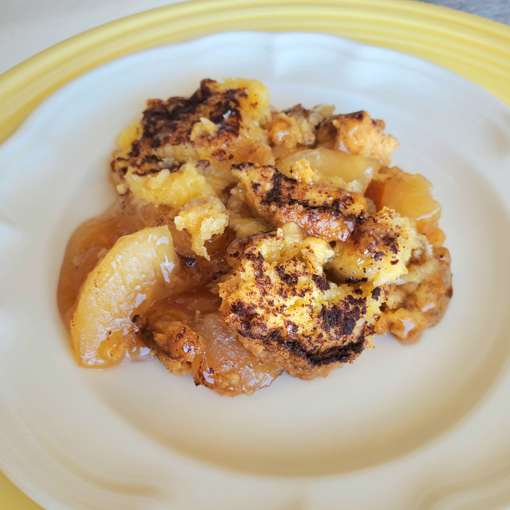

Apple Dump Cake

Description
Great Recipe for apple dump cake.
Juice treat - both before and after a meal!
Ingredients
- 2 (20 ounce) cans apple pie filling
- 1 (15.25 ounce) package yellow cake mix
- ½ cup unsalted butter, cut into cubes
- ¼ teaspoon ground cinnamon, or to taste
Steps
- Pour both cans of apple pie filling into a slow cooker. Sprinkle cake mix evenly over top to cover filling. Dot butter cubes over cake mix and sprinkle cinnamon over top.
- Cover and cook on High until filling is bubbly and topping is golden brown, about 2 hours.